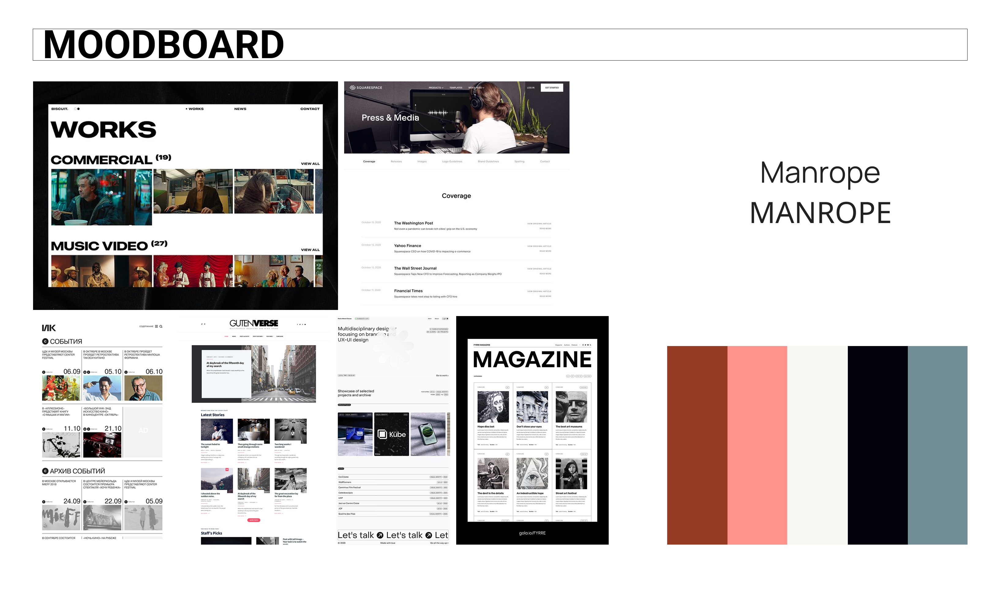

Programmes utilisés
WordPress

Figma
Voir le projet
Découvrez le site complet du projet Métrage en ligne :
Accéder a Métragecollaborations
Objectif du projet
Réaliser un projet multimédia complet intégrant la programmation, le design et l’expérimentation créative, en allant au-delà des consignes initiales pour offrir une plateforme fonctionnelle et engageante.
Réaliser un projet multimédia complet intégrant la programmation, le design et l’expérimentation créative, en allant au-delà des consignes initiales pour offrir une plateforme fonctionnelle et engageante.
Description du projet
Métrage repose sur un développement avec WordPress, accompagné d’un design minimaliste et épuré qui met le contenu au centre de l’expérience utilisateur. La plateforme permet aux utilisateurs de lire et écrire des critiques sur une sélection variée de contenus : courts-métrages, longs-métrages et séries.
Chaque fiche de film ou série comprend un synopsis, les crédits principaux, des informations sur le réalisateur, ainsi qu’un système de notation et de commentaires. Une API de Tomato Rank (inspirée ou connectée à Rotten Tomatoes) a été intégrée afin de fournir des évaluations externes et renforcer la crédibilité des fiches.
Le site propose également une section communautaire où les utilisateurs peuvent interagir via des forums ou des discussions sous les critiques, créant ainsi un espace vivant et participatif.
Design et accessibilité
Le design de la plateforme a été entièrement prototypé avec Figma. Nous avons choisi une esthétique minimaliste pour favoriser une navigation claire, intuitive et sans distraction. L’accent a été mis sur la lisibilité, la hiérarchisation de l’information et la compatibilité mobile.
L’interface est entièrement responsive et multilingue (français et anglais), ce qui permet une accessibilité élargie à un public international.
Étape 1 : Recherche et inspiration
Nous avons analysé plusieurs plateformes de critiques et de diffusion comme Letterboxd, IMDb ou Mubi, tout en échangeant avec des cinéastes indépendants afin de cerner leurs besoins spécifiques. Cela nous a permis de définir des fonctionnalités pertinentes et originales.
Étape 2 : Planification et design
À l’aide de Figma, nous avons élaboré des wireframes et des maquettes haute fidélité. Cette étape a permis de structurer efficacement l’interface et d’anticiper les comportements de navigation des utilisateurs.
Étape 3 : développement
Le site a été construit à l’aide de WordPress, choisi pour sa flexibilité, sa gestion de contenu simplifiée et sa compatibilité avec des extensions multilingues. Nous avons également intégré une API pour les scores critiques, optimisé les performances, et configuré les différentes sections dynamiques (critiques, profils, catégories...).
Étape 4 : Tests et ajustements
Plusieurs tests utilisateurs ont été menés sur différents appareils (desktop, tablette, smartphone) afin de garantir une expérience fluide et accessible. Les retours ont permis d’optimiser certains éléments graphiques, de corriger des bugs et d'améliorer la navigation.
Conclusion
Métrage est un projet complet qui allie design réfléchi, programmation efficace et approche créative. En proposant une plateforme bilingue, accessible et participative, il répond à la fois aux besoins des cinéphiles et des créateurs indépendants. Ce projet démontre notre capacité à gérer un projet web de bout en bout, en alliant outils professionnels (Figma, WordPress, API) et vision artistique.